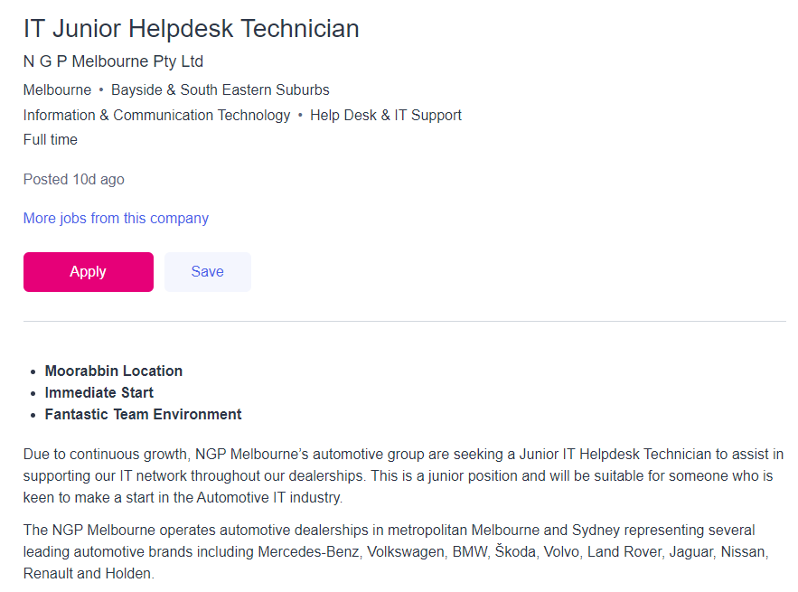
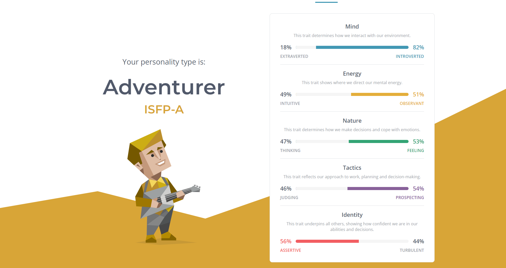
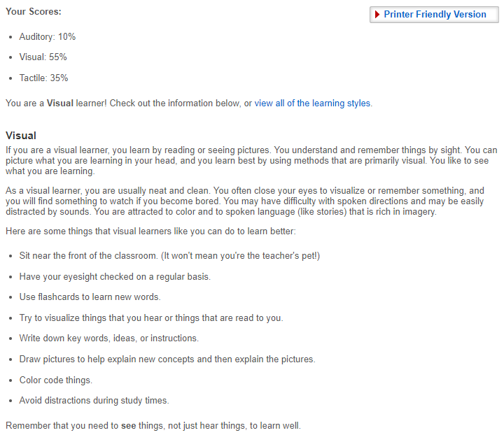
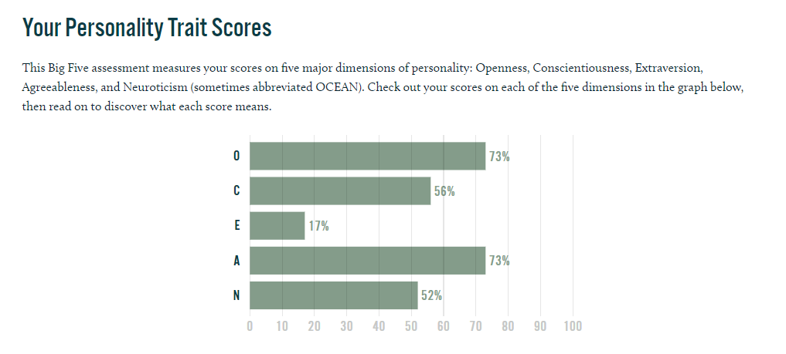

Interest in IT
My interest in IT started when I was in year 10. It was compulsory for students to pick a certain amount of electives for this year and "Computing" was one of the options. My friends and I thought that there was nothing else better to pick so we chose computing on a whim. I ended up enjoying the elective more that I had imagined but since the school's resources were limited, I was not able to go much further than very simple programming and game design. Unfortunately, when I moved on to VCE, there weren't any technology-related subjects that I was able to choose from so I had to just leave everything IT related behind for a while. When it was time to pick my preferences for university, I researched mainly IT and business related courses but ended up settling with IT since I recall enjoying it more than business.
I chose to study Information Technology at RMIT because of an excursion that the computing elective had. It was a week-long excursion that students from my school and other schools attended. The main goal of this excursion was to create a very basic web page (similar to this one but worse) with basic information of each of the group members and present it in front of the students of the other schools. Each group was assigned a volunteer and these volunteers showed us around some of the different buildings that RMIT had in the city. The only other university that my school had excursions to was Deakin but those ones were more general tours whereas the RMIT one was to complete a project. I enjoyed the overall atmosphere of RMIT and was somewhat more familiar with it then the other universities so I decided to choose it as my first preference.
During my time studying the Information Technology course at RMIT, I mainly expect to acquire the skills and gain the experience necessary to find a job which may require the things that I learnt from RMIT. I also expect to learn the importance of working as a group and collaborating with others and most of the assignments that were completed in high school were mainly tasks that had to be done alone such as SACs in test conditions and exams. Some of the classes in IT, mainly introduction to information technology and user-centred design, require the completion of projects within groups so I would like to acquire skills relating to communication and teamwork whilst working on these assignments.
Ideal Job
This job position is as an IT Junior Helpdesk Technician and it includes duties such as having to provide technical support to the staff, onsite equipment installation and many other roles. It is a position that has achievable expectations and duties that are not too different from one another. This position looks particularly appealing to me due to the longevity of the job. The position was made available due to the "continuous growth" of the business, meaning that it will most likely continue to grow, thus job security is a small issue. Its requirement of a degree in IT would make me a viable candidate for the job, assuming I complete my IT course, and it would also allow me to work, both, independently and within teams.
The qualifications required for this course include a degree or TAFE qualification in IT or computer engineering with the minimum requirement being Certificate IV. Other personal skills that this position requires is an understanding of the desktop platforms, adequate customer service skills, and for that individual to own a Drivers License. The job position would also prefer if the individual would have an interest for IT and a desire to acquire new skills whilst working.
The skills and qualifications that I already have include the (basic) knowledge of desktop platforms. I also have experience in the field of customer service as my previous job taught me the skills I needed to communicate to and please customers. I am also eager to learn new skills that may be taught during my time working in this position and I am able to work well with others shown by the few collaborative tasks that I completed during high school and work. A Drivers License will come in due time.
My plan to obtain new skills and qualifications to be eligible for this job would be to complete the bachelor of IT course. Within this course I would be able to further improve many of the skills required for the job along with acquiring a degree such as working together in groups with others as well as completing tasks independently. As I progress through the course, my passion for IT may grow as well which would, in turn, boost my willingness to learn. I also plan to drive more too since that's probably how people get licenses.
Personal Profile
Myers Briggs' Personality Types
Learning Styles Test
The Big 5 Personality Test
The results of these tests reveal that I am an introverted visual learner. This means that I am not the best choice for a role which requires leadership skills and that I would be better suited for a side role within a group scenario.
These results may indicate that I may be too reserved whilst working with a group. This might also mean that I may not communicate as much as the other members of my group because of my introversion. However, despite this, I am also able to provide assistance to others if need be due to the high level of agreeableness in the Big 5 personality test. The amount of openness also highlights my high level of creativity and willingness to try new things which may allow my group to move forwards with their tasks with little resistance from myself.
Due to my introverted nature, I would most likely need to find an individual who excels with the role of leadership as I would prefer to not be a leader. I may also might want to find others who have a different learning style than my own as it would allow the certain individuals in the group to convey information that others may not easily understand due to their learning style. If I am able to take these factors into consideration when finding members for my group then I, and the other group members may have an easier time completing the given work.
Project Idea
Overview
The project idea that I had in mind is a phone app that allows users to input their groceries and the expiration dates of said groceries into a list. The app would then notify the user of which items are near their expirations dates a few days prior and may generate suggestions, if the items are ingredients, as to what the user could use those items for. If the item has already been used up by the time the notification appears, the user will be given the option to delete it from the list or they could also manually delete if they remember.
Motivation
I believe that this project idea will be useful to many individuals as it allows people to reduce the amount of food that goes to waste due to ingredients having reached the end of their expiration dates (if the users choose to consume them). On average, Australia produces waste which would cost the economy around $2000 to $2500 per household per year. This is equivalent to $36.6 Billion per year. By producing an app that allows individuals to monitor their perishables, this may assist in reducing the amount that the economy must spend for food waste.
Description
The app will ask users to input their groceries and the expiration dates of the groceries into a list. The main feature of the app will be the notifications three days prior to when a certain item expires. The user will be given an option to delete the item if it has already been used and finished or they could manually delete the item themselves by going into the app if they remember to. Otherwise the app will generate suggestions as to what the user could make using the item. These suggestions will be generated regardless of the other items and ingredients that the user has stored in the app. This is because the user may not think that it is necessary to input items that have extremely long expiration dates such as canned items. However, the user may only want suggestions depending on ingredients that they have. An option will be added where the user will be able to make the suggestions only consider what is in the list. The notifications will continue for the remaining two days if the user decides to leave the item there without altering it. Once the item has passed its expiration date, it will be automatically deleted from the list. Furthermore, the app will have a "history" feature which will store the items that the user has previously input. This allows the user to add back certain items that they may frequently purchase with ease. They will also be given the option to delete items from their history if they were only planning on purchasing a certain product once. Another feature that this app will have is a shopping list. It would function similarly to existing shopping lists or notepads; the user would need to write down the items that they wish to purchase. The user will be able to access this feature offline since not all individuals have mobile data that they can access at all times. What makes this feature different from using a notes app would be that when the user chooses to delete an item that they have already used from the main list, the app will ask if they wish to add the item back to the shopping list. This would save the users time as they do not have to type out any of the items that they have purchased in the past. Users will also be able to go through their history and add items from there into their shopping list as well which would allow them to save more time (unless the item is extremely far down). However, if the user simply cannot be bothered search though their history to find their desired item, an autofill feature may assist them. By typing into their shopping list, the app will suggest the most recent item from the history with the same letters in the same sequence as the user's input. This would allow users to easily sort out their shopping list for the next time they need to venture out to purchase items. However, an issue with the app is that it is only made to record perishables into the history. This means that users would need to type out the name of the non-perishables such as toothbrushes or containers without assistance from the app's history or notification features.
Tools and Technologies
As the project idea that is being produced is a smartphone app, tools such as MIT App Inventor can be used for those fluent in programming languages such as Java, Kawa or Scheme. However, for those fluent in other programming languages such as Python may want to use other softwares for developing apps such as Kivy. Hardware that would be needed for the development of this app would only include a functional computer or laptop that is able to run the MIT App Inventor or Kivy.
Skills Required
The skills that are required for the development of this app would be to be fluent in certain programming languages depending on the software that is being used. It would be fairly unfeasible for an individual who has no prior experience with app development or programming in general to learn how to find the skills that are required to do so within a short period of time. However, the software and hardware that is required to develop the app is easily accessible as Kivy is a free software for app development and a functional computer or laptop is a necessity for students that are attempting a course in Information Technology.
Outcome
If the project is successful, there may be a reduction in food waste throughout the world, which would also lower the amount of money that the economy have to spend in relation to food waste. However, this is entirely reliant on the decisions of the users. If the users choose to ignore the notifications that appear, then the app will accomplish very little as the main purpose of the app is to help users consume their perishables before the expiration dates in order to hopefully reduce food waste. Users may still use the features of the app but it is up to them if they want to listen.
References
16 Personalities, viewed 19 March 2022 <https://www.16personalities.com/personality-types>
Education Planner, 2011, viewed 19 March 2022 <http://www.educationplanner.org/index.html>
Truity, viewed 19 March 2022 <https://www.truity.com/test/big-five-personality-test>
kivy, viewed 20 March 2022 <https://kivy.org/#home>
MIT App Inventor, 2012, viewed 20 March 2022 <https://appinventor.mit.edu/>
Oz Harvest, viewed 20 March 2022 <https://www.ozharvest.org/food-waste-facts/>
Food Bank, viewed 20 March 2022 <https://www.foodbank.org.au/food-waste-facts-in-australia/?state=vic>